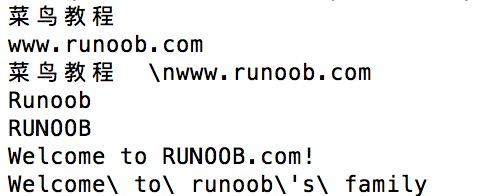

Perl Data Types
Perl is a weakly typed language, so variables do not need to specify a type. The Perl interpreter automatically selects the matching type based on the context.
Perl has three basic data types: scalars, arrays, and hashes. The following is a description of these three data types:
| Number | Type and Description |
|---|---|
| 1 | Scalar
A scalar is the simplest data type in Perl. Variables of this data type can be numbers, strings, or floating-point numbers, with no strict distinction. When using it, add a$before the variable name to indicate that it is a scalar. For example: $myfirst=123; #数字123 $mysecond="123"; #字符串123 |
| 2 | Array
Array variables use the character@at the beginning, with indices starting from 0, for example:@arr=(1,2,3) @arr=(1,2,3) |
| 3 | Hash
A hash is an unorderedkey/valuepair collection. You can use keys as subscripts to obtain values. Hash variables use the character%at the beginning.
%h=('a'=>1,'b'=>2);
|
Numeric Literals
1. Integer
Perl actually stores integers in the floating-point registers of your computer, so they are actually treated as floating-point numbers.
On most computers, floating-point registers can store about 16 digits; anything longer than this is discarded. Integers are actually a special case of floating-point numbers.
Integer variables and operations:
$x = 12345;
if (1217 + 116 == 1333) {
# 执行代码语句块
}
Octal and hexadecimal numbers: octal numbers start with 0, hexadecimal numbers start with 0x. For example:
$var1 = 047; # 等于十进制的39 $var2 = 0x1f; # 等于十进制的31
2. Floating Point Numbers
Floating-point data such as: 11.4, -0.3, .3, 3., 54.1e+02, 5.41e03.
Floating-point registers usually cannot store floating-point numbers precisely, which causes errors. Special attention should be paid during operations and comparisons. The exponent range is usually -309 to +308.
Example
After executing the above program, the output is:
第一个值为：0 第二个值为:0.01
3. Strings
Strings in Perl are represented using a scalar. The way to define them is very similar to C, but in Perl, strings are not terminated with \0.
The difference between double quotes and single quotes in Perl: Double quotes can properly parse some escape characters and variables, while single quotes cannot parse them and will output them as-is.
However, using single quotes allows multi-line text, as shown below:
#!/usr/bin/perl $var='这是一个使用 多行字符串文本 的例子'; print($var);
After executing the above program, the output is:
This is an example of using multi-line string text
Some common escape characters in Perl are shown in the table below:
| Escape Character | Meaning |
|---|---|
| \\ | Backslash |
| \' | Single quote |
| \" | Double quote |
| \a | System bell |
| \b | Backspace |
| \f | Form feed |
| \n | Newline |
| \r | Carriage return |
| \t | Horizontal tab |
| \v | Vertical tab |
| \0nn | Creates a number in octal format |
| \xnn | Creates a number in hexadecimal format |
| \cX | Control character; x can be any character |
| \u | Forces the next character to uppercase |
| \l | Forces the next character to lowercase |
| \U | Forces all characters to uppercase |
| \L | Forces all characters to lowercase |
| \Q | Adds a backslash to non-word characters up to \E |
| \E | Ends \L, \U, \Q |
Example
Next, let's take a detailed look at the use of single quotes, double quotes, and escape characters:
Example
The output of the above example is:

Other Extensions